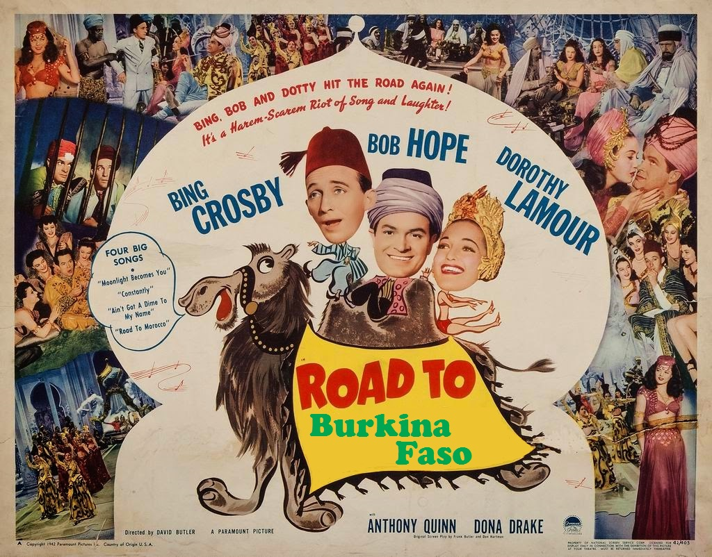

A few words on why I decided to join the Peace Corps.
The Road to Burkina Faso

Strangley enough, I first truly became aware of the Peace Corps when I was traveling in Morocco. I remember the “toughest job you'll ever love” TV commercials in the 70's, but it was when I was on vacation in Morocco around 2010 that I really thought about it seriously. Americans are a little rare in Morroco, and on a couple of occasions, when people found out I was American, they asked if I was with the Peace Corps. When I said “no,” they were disappointed. This was my first hint that the Peace Corps does important and valuable work. I could see that people there had a lot of respect for Peace Corps volunteers.
At the time, I just kind of parked the idea of the Peace Corps in a list of things to think about when I got a little closer to retirement. I guess it was around 2014 or 2015 that I started thinking really seriously about what to do next. I found four books that were written for the “Peace Corps at 50” project – One Hand Does Not Catch a Buffalo, Gather the Fruit One by One, A Small Key Opens Big Doors, and Even the Smallest Crab Has Teeth. I pretty much devouered them, probably because the vignettes therein told a story that fit me well:
- They talk about the humanizing value of just living in a challenging place, getting to know the people there, and letting them get to know you.
- They kept a good balance between integrating with the surrounding culture and staying American.
- A two-year commitment is about the right length.
- The experience seems like a fantastic way to transition from the corporate high-tech world I've been in to a quai-retirement with more freedom and, if I'm fortunate, meaning.
- Peace Corps has the humility to recognize the kind of contribution one person can realistically make in a couple of years.
- Peace Corps service gives enough structure, but not too much – PCVs have a lot of freedom in what they do in their community.
On the first point, I'll never forget a moment I had when I visited the Soviet Union in 1985. I got lost in the subway during rush hour, and I hadn't yet learned to read Cyrillic, so I couldn't even read the station names on the map. All I could really do was mis-pronounce the name of stop where my hotel was, Moscovsky Prospekt (which I'm probably misspelling here). I went up to an elegantly dressed lady, and started just repeating that, expecting her to point me in the general direction. Instead of that, she spent ten minutes leading me to the correct platform. Then she counted “one, two, three” (in Russian) and motioned for me to change trains, made me repeat the name of the train I was to transfer to, and counted out how many stops I should go on that train.
After I followed her perfect directions and got back to the hotel, it hit me. She was “the enemy,” part of what my president, Reagan, called “the evil empire.” I grew up with the fear in the back of my mind that her side would send an ICBM my way, and we'd all die with just a 20 minute warning. A substantial part of my taxes went to buy ICBMs so we could kill, not an anonymous, faceless foe, but her. None of that immediately changed my political outlook or anything, but it did make me see “the other” in human terms.
That's one of the things the Peace Corps does.
In all honesty, another part of it is that living and working in a village in Africa is one hell of an adventure. I know it will be frustrating and difficult, too, but I'm happy with my past experiences living abroad, and I look to repeat that. In France and in Palestine, I frankly enjoyed the role of expatriate. Living in Burkina Faso, I think I'll get that in spades.
I can't wait to get started.